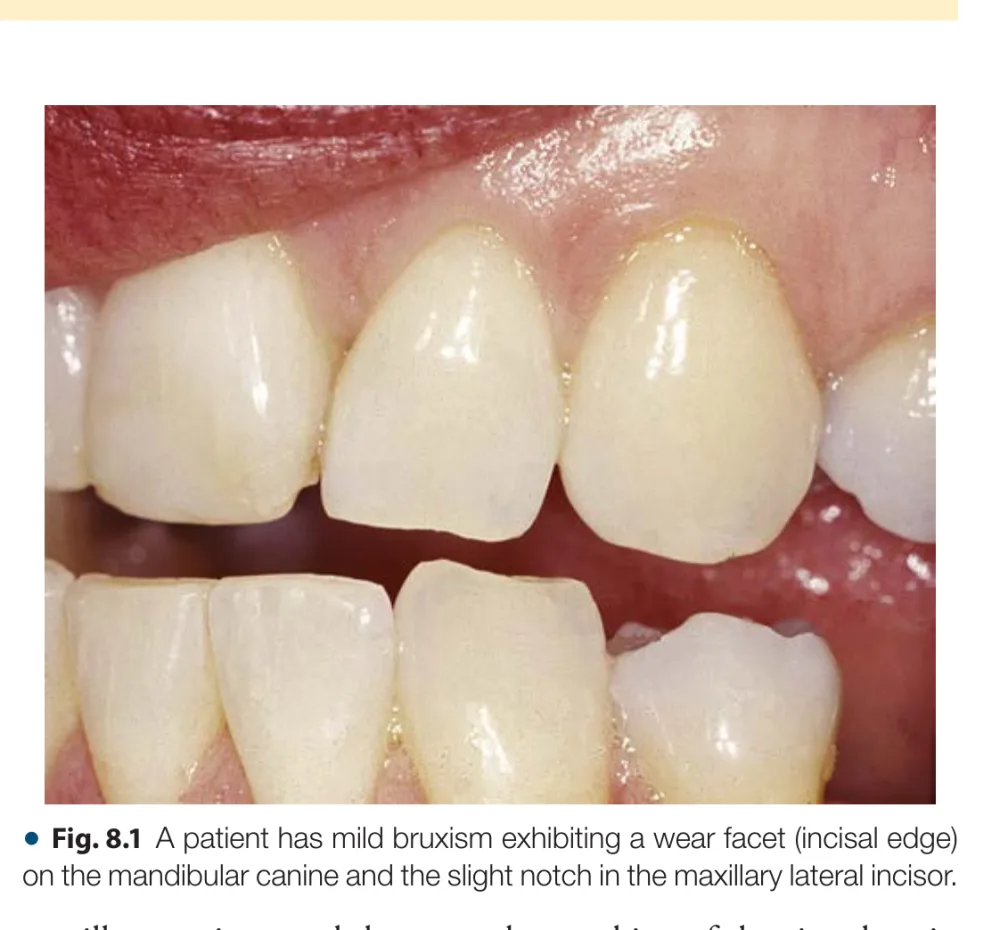
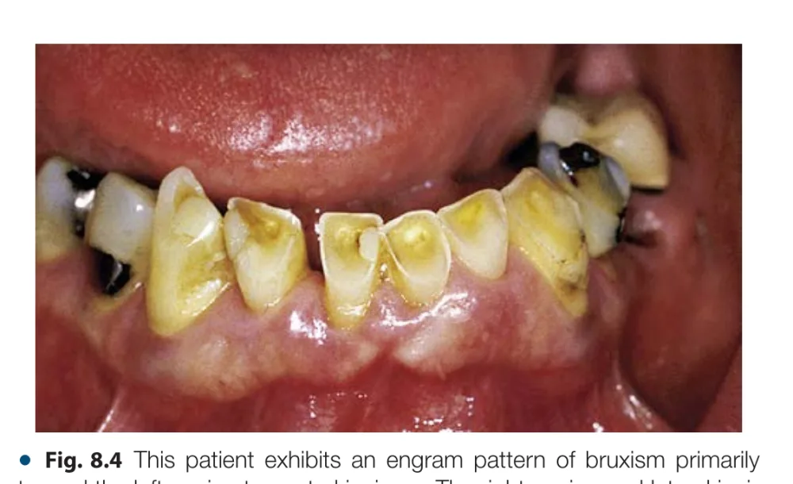

نسخه استخراجشده؛ ترجمه یا تأیید علمی انجام نشده است. وضعیت: captured
در یونیت پیش دیدی که براکسیسم شدید امتیاز ۱۰ از ۱۰ در مقیاس خطر میگیرد. این یونیت به تو یاد میدهد چگونه آن را تشخیص بدهی و درجهبندی کنی — چون بدون درجهبندی، امتیاز خطر معنایی ندارد.
و نخستین نکته، یک هشدار است:
واقعیت این است: «وقتی بیمار از حساسیت عضلانی آگاه است یا همسرش از وضعیت شبانه باخبر است، تشخیص بهراحتی به دست میآید. با این حال، بسیاری از بیماران این مشکلات را به نیروهای بیشازحد روی دندانها نسبت نمیدهند و تاریخچهی منفی گزارش میکنند.»
و بلافاصله: «نبود این علائم، براکسیسم را بهعنوان یک احتمال رد نمیکند.»
پس پرسیدن از بیمار کافی نیست. باید نشانههای عینی را خودت پیدا کنی.
نشانههای بالینی براکسیسم:
• افزایش اندازهی عضلات تمپورال و ماستر (این عضلات همراه با پتریگوئید خارجی ممکن است حساس باشند)
• انحراف فک پایین هنگام باز کردن
• محدودیت باز شدن اکلوزالی
• افزایش لقی دندانها
• ابفراکشن سرویکالی دندانها
• شکست دندان یا رستوریشن
• کراونها یا پروتزهای ثابتِ بدون سمان (یعنی سمانشکسته و لقشده)
اما یکی بر همه برتری دارد:
«با این حال، دقیقترین و آسانترین راه تشخیص براکسیسم، ارزیابی سایش دندانهاست.»
و دلیل مهمتری هم دارد: «نهتنها این سادهترین روش تعیین براکسیسم در یک بیمار مشخص است، بلکه امکان طبقهبندی اختلال به غایب، خفیف، متوسط، یا شدید را هم میدهد.»
یعنی سایش همزمان دو کار میکند: تشخیص و درجهبندی. و درجهبندی همان چیزی است که قضیهی درمان استرس برای وزندهی به آن نیاز دارد.

چهار درجه با معیارهای دیدنی تعریف میشوند. مرز میان درجهها را دقیق نگه دار، چون همین مرزها تصمیم درمانی را عوض میکنند.
غایب: «نبود الگوهای سایش قدامی در دندانها، نشاندهندهی نبود براکسیسم است.»
خفیف: «براکسیسم خفیف سایش اندکی از دندانهای قدامی دارد ولی مصالحهی زیبایی نیست.»
متوسط: «براکسیسم متوسط فاستهای سایش انسیزال قدامی آشکار دارد ولی الگوی سایش اکلوزالی خلفی ندارد.»
شدید: «براکسیسم شدید گاید انسیزال حداقلی تا غایب از سایش بیشازحد دارد، و سایش خلفی دندانها آشکار است.»
الگو را ببین — مرز اصلی، درگیری خلفی است:
• خفیف و متوسط: فقط قدامی، و تفاوتشان در شدت سایش قدامی است
• شدید: خلفی هم درگیر شده و گاید انسیزال از دست رفته
پس یک پرسش ساده، مرز حیاتی را مشخص میکند: «آیا دندانهای خلفی هم ساییدهاند؟» — و همین پرسش، بیمار امتیاز ۱۰ را از بقیه جدا میکند.
و محلهای مشخص سایش:
کجا را نگاه کنی: «فاستهای سایش غیرعملکردی روی لبههای انسیزال ممکن است در دندانهای طبیعی یا جایگزین رخ دهند، بهویژه در مندیبل و کانینهای ماگزیلا، و ممکن است نچینگ سینگولوم در دندانهای قدامی ماگزیلا وجود داشته باشد.»
سه محل کلیدی برای جستوجو: لبهی انسیزال مندیبل، کانین ماگزیلا، سینگولوم قدامی ماگزیلا.
و یک نکتهی تعدیلکننده که نباید از قلم بیفتد:
«سایش قدامی ایزوله معمولاً اهمیت اندکی دارد اگر بتوان همهی تماسهای دندانهای خلفی را در حرکات اکسکورسیو حذف کرد.»
این جمله سایش قدامی را از یک «یافتهی نگرانکننده» به یک «یافتهی قابل مدیریت» تبدیل میکند — به شرط آنکه بتوانی تماسهای خلفی را در اکسکورسیون حذف کنی.
و همین ما را به بحث طراحی اکلوژن میرساند که در درس سوم همین یونیت و در یونیت اکلوژن به آن میپردازیم.
و یک قید مهم بر همان جمله: «سایش دندان وقتی در نواحی خلفی یافت شود بیشترین اهمیت را دارد، و ممکن است شدت براکسیسم را از دستهی متوسط به شدید ببرد.»
و دلیلش: «الگوهای سایش خلفی مدیریت دشوارتری دارند، چون این معمولاً به از دست رفتن گاید قدامی در اکسکورسیون مربوط است؛ وقتی دندانهای خلفی در موقعیتهای اکسکورسیو فک تماس پیدا کنند، نیروهای بیشتری تولید میشود.»
و عدد اثرش: «با گاید انسیزال و نبود تماس خلفی، دو سوم این عضلات منقبض نمیشوند و در نتیجه نیروی گاز بهشکل چشمگیری کاهش مییابد.»
پس سایش خلفی هم نشانه است و هم علت: نشانهی شدت بالا، و علتِ ادامهی چرخه.
و پنج تغییری که براکسیسم در نیروی طبیعی جویدن ایجاد میکند:
فهرست دقیقش این است: «براکسیسم نیروهای طبیعی جویدن را از پنج جهت تغییر میدهد: بزرگی (نیروهای گاز بالاتر)، مدت (ساعتها بهجای دقیقهها)، جهت (جانبی بهجای عمودی)، نوع (برشی بهجای فشاری)، و تشدید (چهار تا هفت برابر طبیعی).»
این پنجگانه را نگه دار، چون هر کدام یک راهبرد درمانی متفاوت را ایجاب میکند — و «مدت» همان بُعدی است که شمار چرخههای بارگذاری را بالا میبرد و شکست خستگی را جلو میاندازد.
و مفهوم «انگرام» — الگوی تکرارشونده:
«بیماران معمولاً دندانهایشان را در یک حرکت مشخص و تکرارشوندهی فک پایین میسایند.» و این را «مسیر تخریب» (pathway of destruction) مینامند.
پیامدش: «سایش اکلوزالی بسیار مشخص است و عمدتاً روی یک سمت قوس، یا حتی فقط روی چند دندان.»
و هشدار حیاتی: «این الگوی انگرام معمولاً پس از درمان باقی میماند.» و «اگر دندانپزشک ترمیمی گاید انسیزیو را روی دندانهایی که بهشدت تحت تأثیر الگوی انگرام براکسینگاند دوباره برقرار کند، بروز عوارض روی این دندانها افزایش خواهد یافت.»
یعنی نباید گاید را روی دندانهایی گذاشت که مسیر تخریب از آنها میگذرد. این یک تصمیم طراحی مشخص است که از خواندن الگوی سایش بیرون میآید.
و عوارض مورد انتظار وقتی ایمپلنت در مسیر تخریب قرار گیرد: «ایمپلنت ممکن است شکست بخورد، بشکند، یا تحلیل استخوان کرستال، شل شدن پیچ اباتمنت، شکست ماده، یا رستوریشنهای بدون گیر داشته باشد.»
و صادقانهترین جمله دربارهی براکسیسم شدید: «اگر بیمار الگوی براکسیسم شدید را ادامه دهد، پرسش این نیست که آیا عوارض رخ میدهند، بلکه این است که چه زمانی و کدامیک. دندانپزشک باید به بیمار اطلاع دهد که این عادتها این مشکلات را ایجاد خواهند کرد.»
